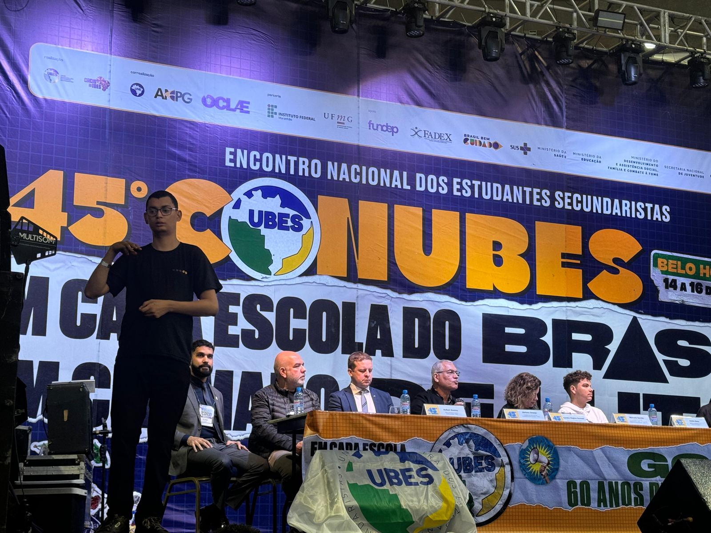
01
Interpretação e acessibilidade em eventos
Congressos, shows, mostras e espaços culturais com intérpretes de Libras e planejamento de acessibilidade.
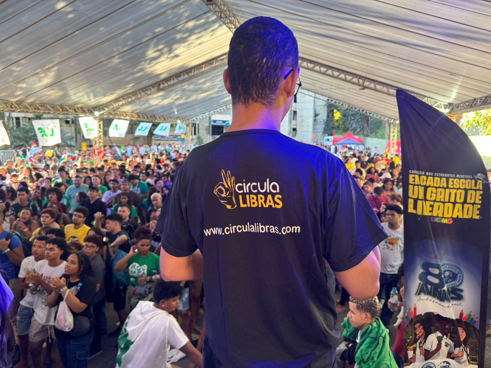
Ribeirão das Neves · MG
Somos uma organização sem fins lucrativos que leva a Língua Brasileira de Sinais para a cultura, a escola e a comunidade, para que pessoas surdas e com deficiência tenham acesso pleno à arte e à informação.
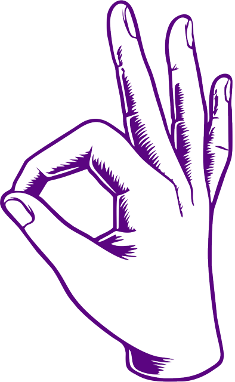
Quem somosO Instituto Circula Libras (ICL) promove a acessibilidade cultural para que pessoas surdas e com deficiência tenham acesso pleno às artes, à educação e à informação.
Atuamos de forma contínua no ensino de Libras, na formação em acessibilidade e inclusão e na sensibilização de profissionais e espaços culturais. Também produzimos curtas-metragens e videoclipes acessíveis, circo e teatro para surdos e ouvintes.
Garantir acesso à cultura e à informação para a comunidade surda.
Arte, formação, audiovisual e interpretação em Libras.
Escolas e periferias de Neves, Esmeraldas e da RMBH.
Ponto de Cultura certificado pelo Ministério da Cultura, na Política Nacional Cultura Viva.
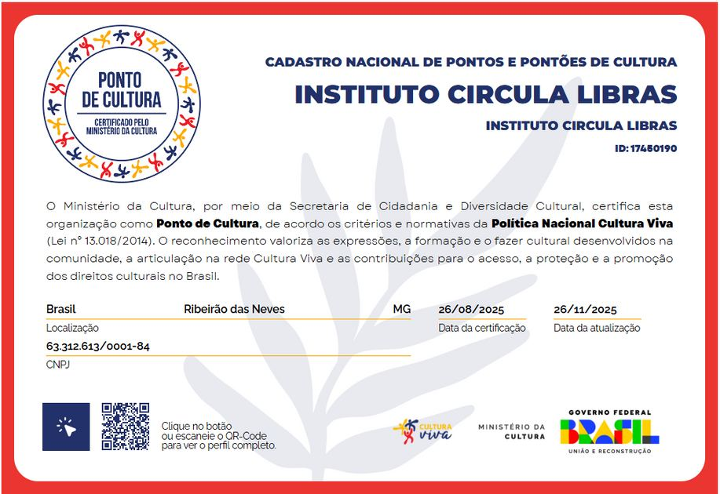
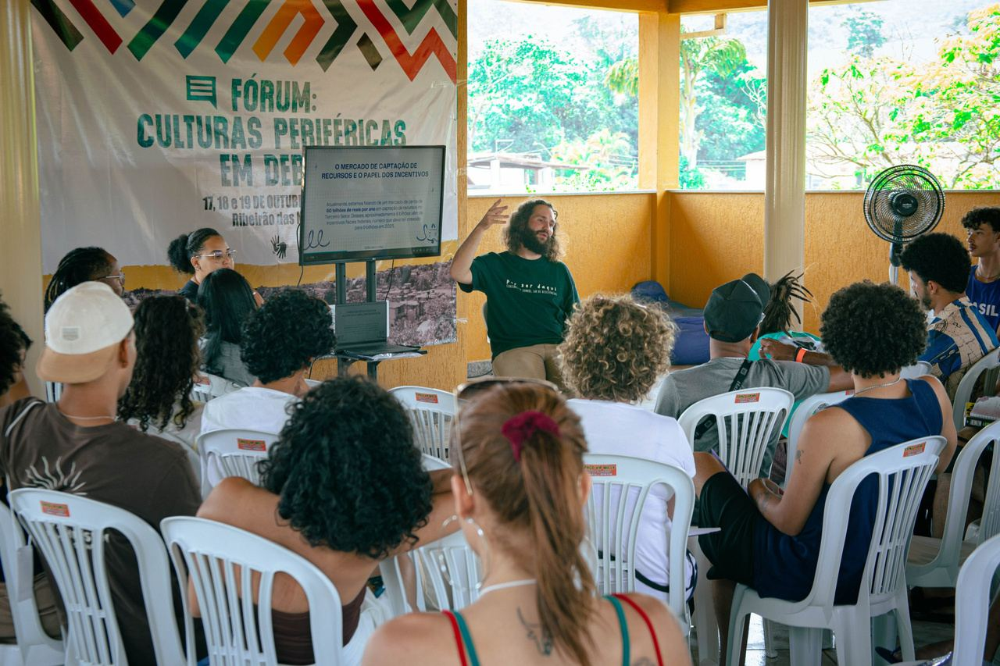
O que fazemos
Passe o mouse ou toque nas fotos: cada frente ganha cor quando a Libras chega.

Congressos, shows, mostras e espaços culturais com intérpretes de Libras e planejamento de acessibilidade.
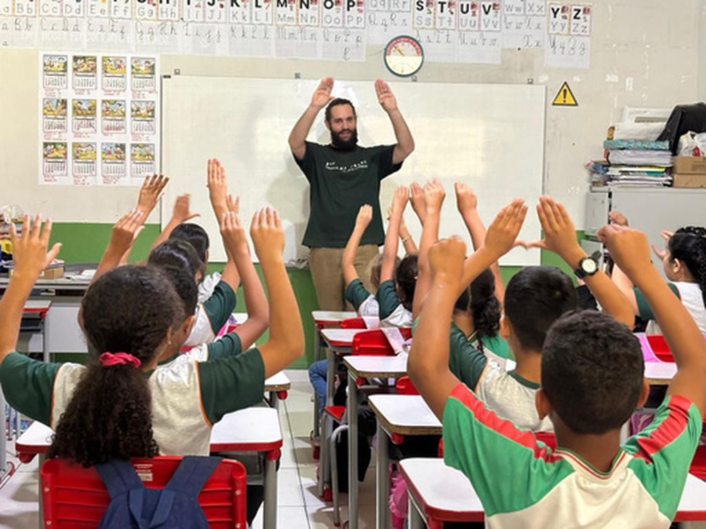
Cursos para estudantes, educadores, profissionais e comunidades, do básico à conversa completa.
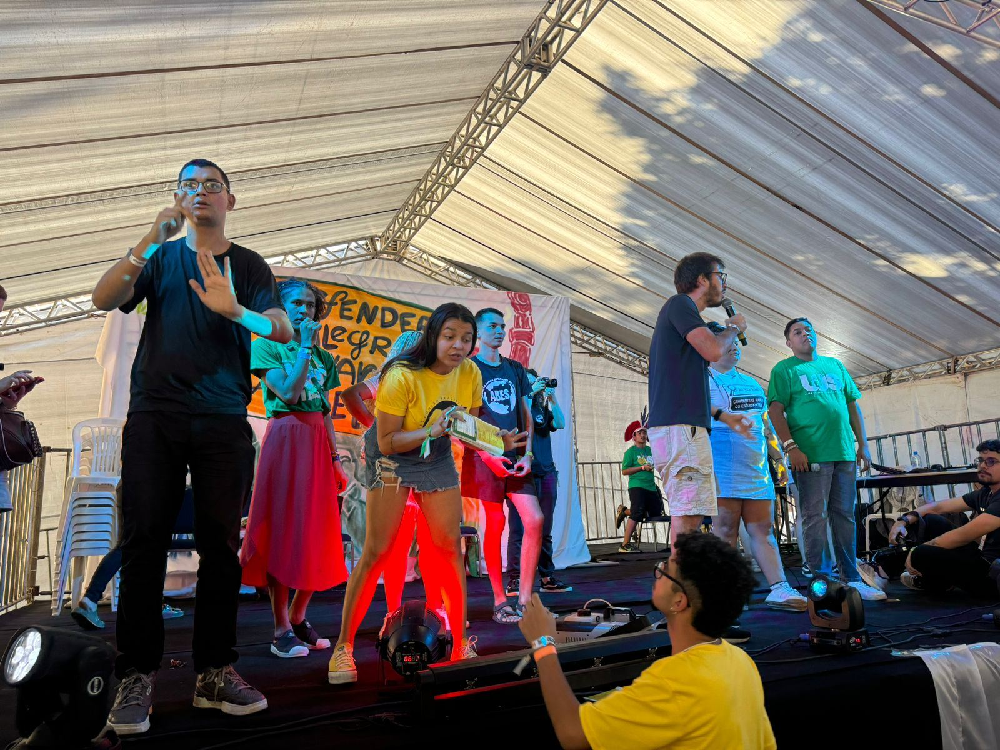
Circo, teatro e música em Libras, como o espetáculo CIRCO(LA)LIBRAS.
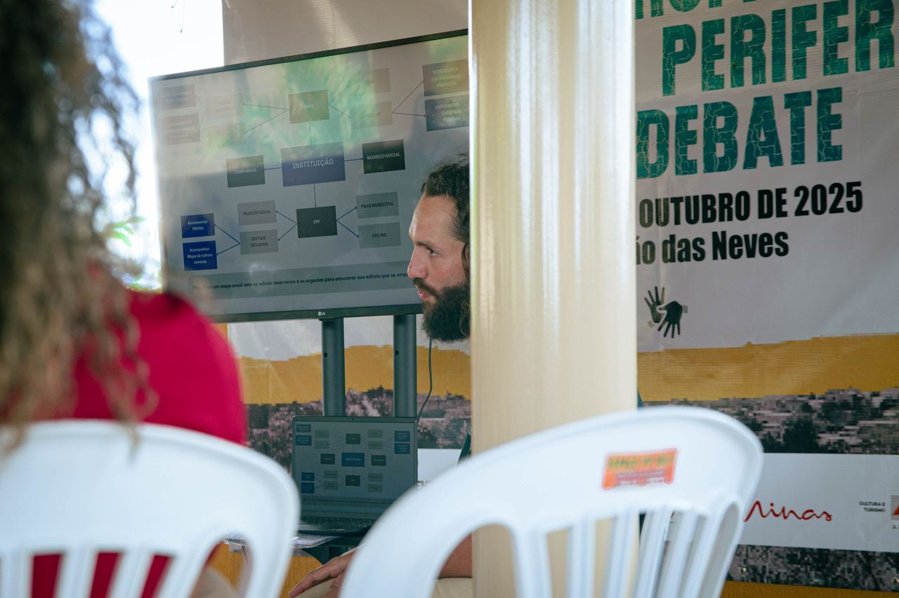
Curtas-metragens e videoclipes com Libras, legendas e audiodescrição.
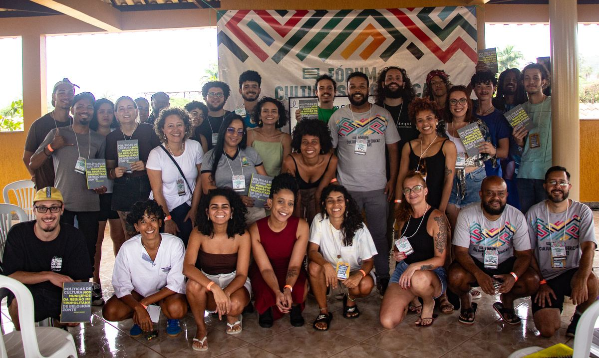
Consultoria em acessibilidade, oficinas para equipes e pesquisa sobre inclusão na cultura.
Jogando e aprendendo Libras
Jogos gratuitos ligados às aulas do nosso Curso de Libras. Funcionam no celular e no computador, sem instalar nada.
Nossa trajetória
A jornada começa com pequenas ações em Libras na PUC Minas São Gabriel.
Estreia o espetáculo que une circo e Libras, com apoio do curso de formação de agentes culturais da UFMG.
Parceria com a PUC Minas Coração Eucarístico para formar estudantes de várias áreas em Libras.
O Circula Libras passa a atuar como iniciativa social e amplia os serviços: consultoria em acessibilidade para eventos culturais e negócios.
Pela Lei Paulo Gustavo em Ribeirão das Neves, lançamos o curta "Silêncio Revelado" e o projeto Geladeira Literária.
Apresentação cultural em Libras no Estádio do Mineirinho, em Belo Horizonte.
Nasce o Instituto Circula Libras com CNPJ próprio, certificado como Ponto de Cultura. Fazemos a acessibilidade do 45º CONUBES e do Fórum Culturas Periféricas em Debate.
O espetáculo CIRCO(LA)LIBRAS circula pelas escolas, o Libras Kids chega à rede de Esmeraldas e lançamos o Curso de Libras com 65 jogos online.
Projetos
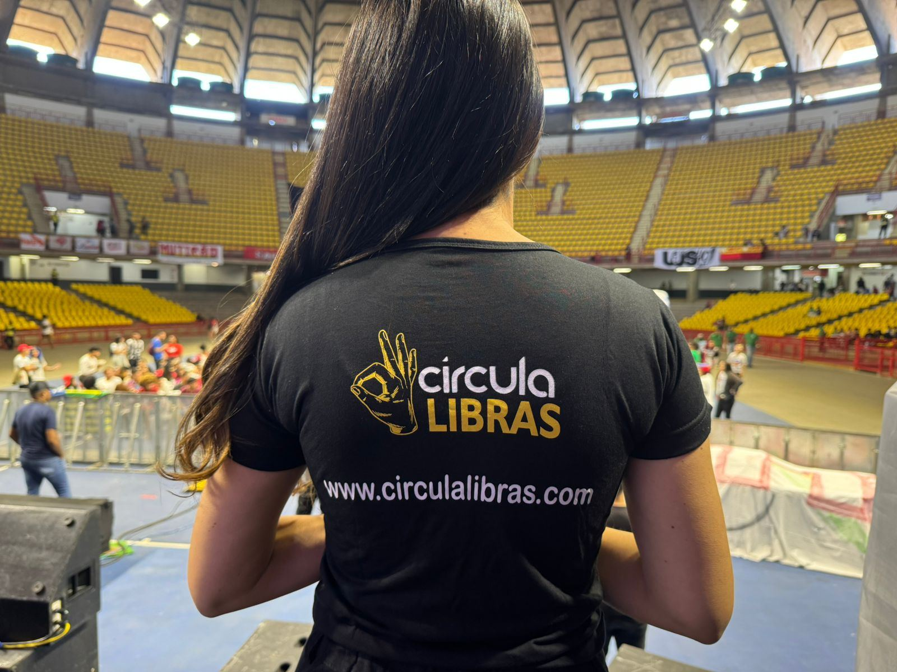
AcessibilidadeInterpretação em Libras no Congresso Nacional dos Estudantes Secundaristas.
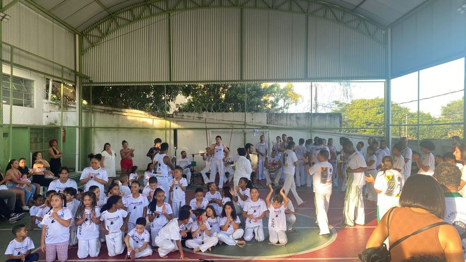
Cultura popular8º Encontro da Capoeira Nevense com o grupo Guerreiros do Abaeté, com Libras do início ao fim.
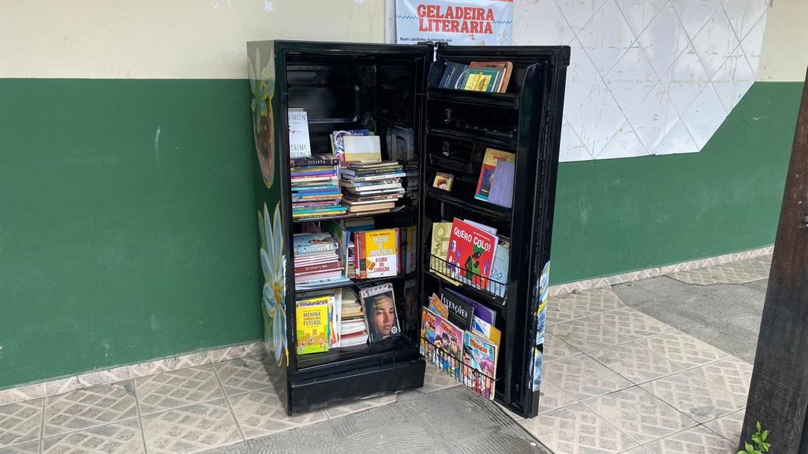
Lei Paulo GustavoBibliotecas autogeridas pela comunidade, com leitura e acessibilidade lado a lado.
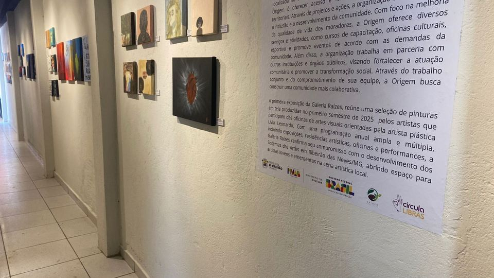
Arquitetura acessívelProjeto de acessibilidade completo da galeria do Origem Instituto, em Ribeirão das Neves.
Fórum sobre cultura e acessibilidade em Ribeirão das Neves, em outubro de 2025.
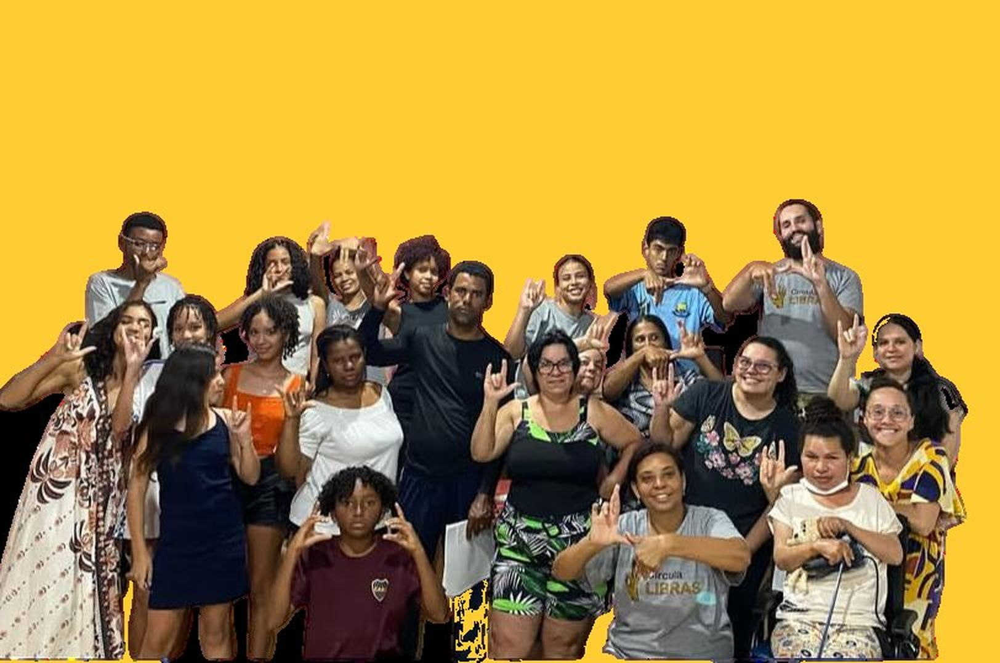
FormaçãoCurso gratuito de Libras e acessibilidade para a comunidade de Neves.
Apoie
Cada apoio vira aula, intérprete no palco, filme com legenda e criança surda vendo um espetáculo pela primeira vez.
Empresas contribuintes de ICMS em Minas podem apoiar nossos projetos pela LEIC-MG, sem custo extra.
Quero patrocinarEscolas, espaços culturais e eventos: leve Libras e acessibilidade para o seu público.
Vamos conversarTransparência